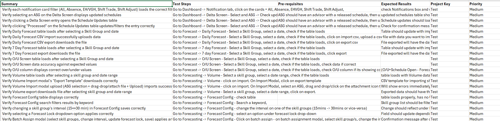

A sample functional testing project demonstrating structured test design, positive and negative scenarios, validation logic, and business-focused quality thinking.
The fictional application is an employee self-service portal where employees can submit, review, and cancel time-off requests.
The objective of the QA exercise is to validate that the application's core workflows behave correctly while also identifying common validation, authorization, and edge-case scenarios.
Validate that users can successfully perform supported actions such as creating and cancelling time-off requests.
Attempt invalid actions to verify that the application prevents incorrect data or unsupported workflows.
Consider scenarios involving date boundaries, overlapping requests, and unusual user inputs.
Verify that users cannot access functions or data outside their permitted role or access level.
The following examples demonstrate how I approach functional test design using realistic user journeys and expected outcomes.
| Test ID | Scenario | Test Condition | Expected Result |
|---|---|---|---|
| TC-001 | Submit valid time-off request | User selects a valid future date and submits the request. | Request is successfully submitted and receives the appropriate status. |
| TC-002 | Submit request without a date | User attempts to submit without selecting a required date. | Validation message is displayed and request is not submitted. |
| TC-003 | Submit overlapping request | User selects dates that overlap an existing approved request. | Application prevents the conflicting request and displays appropriate feedback. |
| TC-004 | Cancel existing request | User selects an eligible submitted time-off request and chooses Cancel. | Request status changes to Cancelled and the updated state is displayed. |
| TC-005 | Access restricted request | User attempts to access another employee's request directly. | Application denies unauthorized access. |
| TC-006 | Select same start and end date | User selects the same valid date for both start and end. | Application accepts the request if single-day time off is supported. |
| TC-007 | Refresh after submission | User submits a request and refreshes the browser. | Newly submitted request remains persisted with the correct status. |
| TC-008 | Session expiration | User's session expires while accessing the request page. | User is prompted to authenticate again and protected information remains secure. |
A representative view of the test cases I created, demonstrating structured test steps, expected results, and validation coverage.
